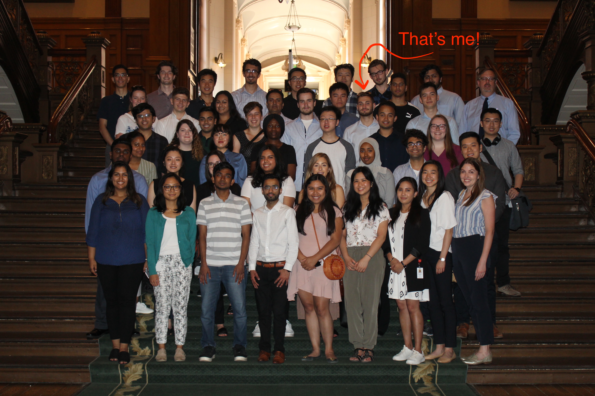

-

Jonathan Hovich
Work Term 3
About the Organization
The Ontario Ministry of Health and Long-Term Care (MOHLTC), Health Services Information & Information Technology (I&IT) Cluster carries out a major role in delivering information systems critical for the improvement of health and patient care across Ontario.
Working at the Ontario Ministry of Health and Long-Term Care
The Ontario Ministry of Health and Long-Term Care is Ontario’s largest ministry and the vast structure of this organization is compartmentalized in clusters and further into individual branches. The Digital Health Solutions and Innovation Branch (DHSI) which I had worked in, carried out many research and development tasks for numerous information systems that are used across Ontario.
Learning Goal 1: Civic Knowledge & Engagement
Become more engaged and knowledgable about issues surrounding the healthcare system in Ontario.
The most crucial issue surrounding the ministry is public health. In order to ensure the well being of Ontarians, a comprehensive integrated information system called Panorama was developed in part with IBM to surveil and manage outbreaks of infectious diseases, immunizations, and vaccine inventories. This mammoth system is comprised of countless subsystems that enable individuals and public health professionals alike manage complex immunization information in real-time.
To further enable individuals and public health professionals, numerous public health extensions had been created to support Panorama. These included special website portals and mobile applications that are geared towards certain health professionals and providers, as well as tools that can be used by the general public. I had the opportunity to work with a variety of these extensions and tried my hand at various types of development.
DevOps
I was embedded in a software team that was responsible for a comprehensive iOS app that public health units would use to carry out mass immunization operations (such as an entire class of students getting vaccination shots). This app is currently being used by dozens of public health units in Ontario and is actively being maintained and improved. My initial task was to fix an error that was failing the Continous Integration / Continuous Delivery (CI/CD) pipeline for this application.
Problem Solving
Understand what the problem is, and break it apart into "bite-sized" chunks to enable me to work through each task in an effective manner.
Upon initial investigation, the abovementioned error was unclear and caused builds to sporadically fail. I had also come to find out previous attempts to fix this issue had been unsuccessful. I set out to further investigate the problem by studying each step of the pipeline which was carried out by Jenkins (a CI/CD tool). After a careful and exhaustive investigation, I managed to diagnose the issue and implemented a solution to resolve it which included writing automation scripts, and reconfiguring the Xcode project - a step where my iOS development skills certainly came in handy. It was very gratifying to know I was able to resolve an incredibly complex issue within my first couple of days.
The knowledge I had attained in this DevOps related task enabled me to set up CI/CD for numerous other projects using Jenkins as well as GitLab CI. I also did API development for a comprehensive system that was utilized as the resource for standardized vaccine terminology and vaccine product information. In addition to this, I worked with other another co-op developer to migrate an out-of-date (legacy) extension of Panorama such that it would be compliant with the Accessibility for Ontarians with Disabilities Act (AODA).
Full Stack Development
Depth & Breadth of Understanding
Develop a deep understanding of the technology stack that is used to develop large scale software products.
The extension that required AODA compliance was a large undertaking in of itself. It was a website that utilized legacy technologies and libraries, and whose development environment required a very extensive and error-prone setup. The underlying stack consisted of a web front-end supplemented with a Java back-end with a database component. In order to bring the extension up to the AODA standard, a sizable chunk of the front-end had to be redeveloped. The back-end endured changes as well, which in my case required the learning of Java PrimeFaces and other Java libraries.
Final Thought
I truly value the experience I will take away from working in the public sector. I gained an interesting inside perspective into a massive organization and also had the opportunity to do software development on a large scale. I appreciate the work that the Ministry of Health and Long-Term Care deliver to Ontarians more than ever now, given just how critical it is for the public health of our population.
MOHLTC co-op students at a tour of the Ontario Legislative Assembly Building.
Acknowledgments
I would like to thank everyone at the DHSI branch for a very dynamic learning experience over the past four months. To my fellow co-ops - Simon, Sarah, Jay, and Lucas - thank you for a very memorable co-op term. My dear colleagues - Alex, Gursevek, Octavian, Lori, Conor, and David - I appreciate all of your help over the course of the summer! And to my supervisor Vlad and manager Mihaela - thank you for your guidance and support. The DHSI branch is in such great hands and I’m more confident than ever about the state of innovation that is endured within the Ontario Ministry of Health.